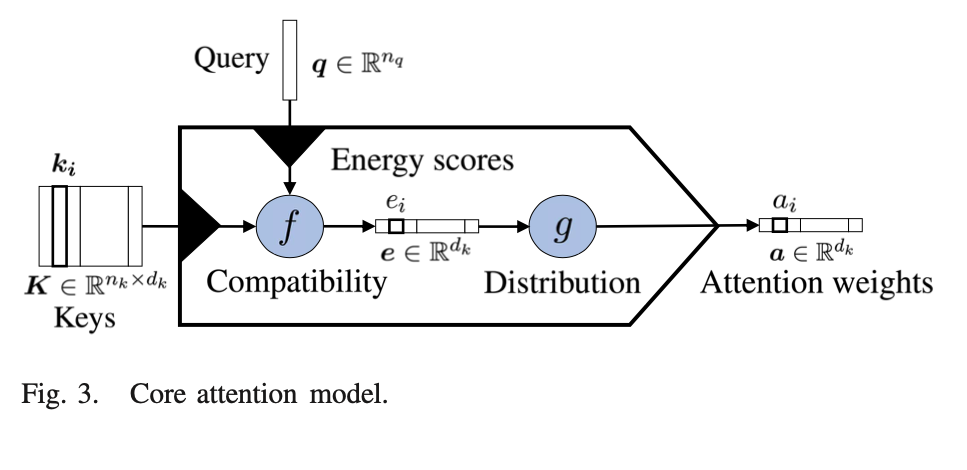
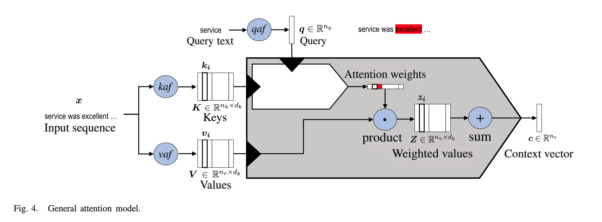
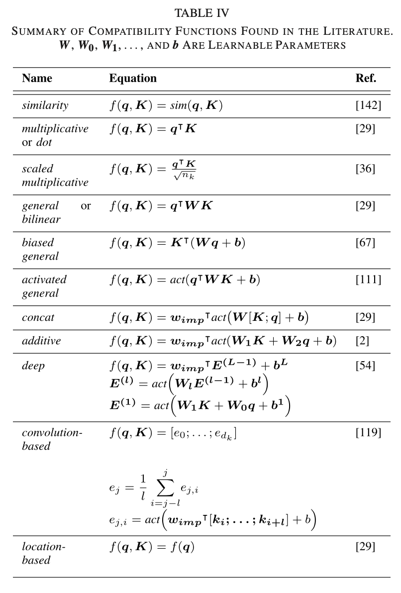
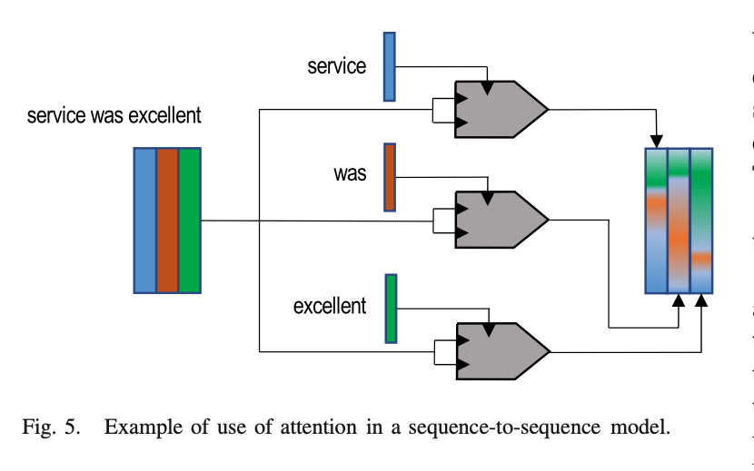

1. Read the title and make an opinion of what’s in the paper (e.g., the area, the task)
Year: 2020
Attention in Natural Language Processing
I wanted to better understand the attention mechanism, so I found a paper that focuses on a quality explanation.
2. Read the abstract well and form a hypothesis of
- What’s new in the paper?
- Do you have a clear overview about what the paper is all about?
I have come to realize that published papers do have to argue for their existence, which is different than blog posts. Since there is a review system for papers, the authors argue in such a way so that you can understand how this paper contributes to a larger body of knowledge. Many blog posts can say the same thing and nobody cares. However, there must be benefits to having a medium where the obstacle to publish is much lower, therefor claiming a different space of ideas to tackle. I for one am thankful for the medium of blog posts.
In this article, we define a unified model for attention architectures in natural language processing,
Aparently there are a variety of formats that attention can be considered under, and this paper will try to build a unified framework.
We propose a taxonomy of attention models according to four dimensions:
- input representation
- compatibility function
- distribution function
- multiplicity of the I/O
Hopefully each of these will be taken in turn. It is good that they are taking time to propose taxonomies for these models. A variety of approaches can make similar concepts confusion to beginners as they approach the topic.
3. Look at the images and extract a set of “questions” about what is not clear about their method from the images. Now your job is to answer these questions by reading the paper.
This core attention model is certainly important for holding the key ideas in your head at once.
There is little detail in how the Compatibility and Distributiont functions are computed, but we do see some of the aspects of the taxonomy mentioned before with the Compatibility/Distribution functions.

An more detailed diagram is below which explodes the compatibility and distribution functions.

Table 4 shows a summary of compatibility functions.

Figure 5 is showing a application of attention to sequence modeling. It is nice to see how they visualize input embeddings as solid colors, while the output embeddings are a mixture of those colors. It is a nice visual cue for what is going on.

4. Read the method aiming to answer your “questions” about the paper. Focus on understanding only the things relevant for the story (i.e., to understand the contribution).
It is important to note that the core attention block (top image) is embedded in the more detailed general attention model.
That is due to the nature of the values.
This also shows the outcome of the attention weights (which are the horizontal vector). These attention weights are multiplied by the Values to produce a weighted value, where attention has been applied.
Finally an context vector can be computed by summing up all Weighted Values.
They divide attention models on a few design choices that can be made. An outline of their taxonomy is as follows:
A. Input Representation
The K and V representations
- Self-Attention K == V
- Hierarchical-Input Architectures Two or more level attention structure
B. Compatibility Functions
See table 4.
C. Distribution Functions
Mapping Energy scores to attention weights.
D. Multiplicity
- Multiple Outputs multiple interpretations
- Multiple Inputs combined coattention
5. Read the experiments to convince you that the show results are caused by their claim. Be aware that the experiments highlighted are the best scenarios and are fully hyper-parameter tuned.
No experiments here.
6. Make sure you answered all your questions. Did the authors convince you that their story has the effect that they claim?
This was a very helpful paper and an enjoyable read.